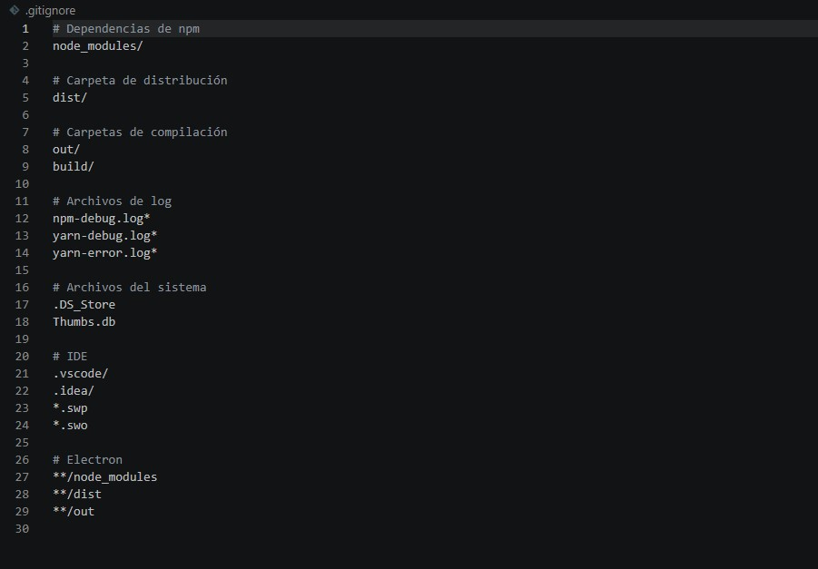

.gitignoreEl archivo .gitignore especifica qué archivos y carpetas deben ser ignorados por Git. Es útil para excluir archivos generados automáticamente, archivos de configuración locales, dependencias o cualquier archivo que no desees commitear.
En la raíz de tu repositorio, crea un archivo .gitignore:
echo > .gitignore
O en Windows PowerShell:
New-Item -Name ".gitignore" -ItemType File
Luego abre el archivo con tu editor favorito y añade los patrones de archivos/carpetas que deseas ignorar. Por ejemplo:
node_modules/
.env
.DS_Store
*.log
dist/

Haz clic derecho en la raíz del proyecto en el explorador de archivos y selecciona "New File" (Nuevo archivo)
Nombra el archivo como .gitignore
Añade los patrones que deseas ignorar, uno por línea. Algunos ejemplos comunes:
node_modules/ - Carpeta de dependencias de Node.js.env - Archivo de variables de entorno*.log - Todos los archivos de log.DS_Store - Archivos del sistema macOSdist/ - Carpeta de compilaciónUna vez guardado, Git ignorará automáticamente los archivos y carpetas especificados
* para coincidir múltiples archivos (ej: *.pyc)# para añadir comentarios en el archivo .gitignore